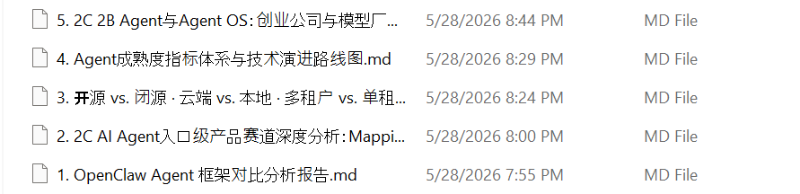

下图是 Perplexity 分 session deep research 后产出的中间文档清单（perplexity 侧的 md 文件原貌截图），每一份对应一个研究子问题。下方按顺序展开其中两份代表性章节。

4 · Agent 成熟度指标体系与技术演进路线图
Agent成熟度指标体系与技术演进路线图
核心判断：截至2026年5月，前沿Agent的「任务时间域（Task Time Horizon）」约为12小时（50%成功率），以约每89天翻倍的速度增长；当前技术水位处于"多小时级受监督自动化"阶段，尚未进入"工作日级全自主"阶段，但这一跃迁预计将在2027年内发生。
一、成熟度指标的定义与选取
1.1 为什么需要新的量化指标
传统AI评估体系（如MMLU准确率、BLEU分等）衡量的是模型的知识密度，对Agent而言根本性错位——Agent失败的原因不在于单步答错，而在于无法将数十步行动串联完成。需要一个能直接映射"可委托工作量"的指标。
1.2 核心指标：任务时间域（Task Time Horizon, TTH）
定义：使AI Agent以 (p%) 概率成功完成任务所对应的"人类专家完成该任务所需时长"。
[ \text{TTH}{p%} = \arg\max{t} \left[ P(\text{agent success} \mid \text{human_time} = t) \geq p% \right] ]
- 由非营利机构METR（Model Evaluation & Threat Research）提出并持续更新[^1]
- 以人类完成时间作为任务难度的测量单位，而非AI的实际运行时长
- 使用逻辑回归拟合成功率曲线，在任务集上取P50作为基准点[^2]
优势：
- 与业务委托能力直接对应（"能帮我做一件多长的事"）
- 历史可比性强，从2019年起连续追踪[^3]
- 对AI速度无偏——不论AI运行快慢，衡量的是"等价人类工作量"
1.3 辅助指标矩阵
单一指标不足以刻画Agent全貌，建议配合以下辅助指标：
| 指标维度 | 具体指标 | 当前代表基准 | 当前水位 |
|---|---|---|---|
| 能力上限 | TTH-50%（任务时间域） | METR Time Horizons | ~12小时[^3] |
| 可靠性 | Pass^k（同一任务重复k次通过率） | τ-bench Pass^8 | <25%[^4] |
| 工程能力 | SWE-bench Verified解决率 | GitHub Issue修复 | ~80%+（2026初）[^5] |
| 通用能力 | GAIA Level-3通过率 | 多步推理+工具链 | 待最新数据 |
| 计算机控制 | OSWorld任务完成率 | 真实OS跨应用操作 | ~66%[^6] |
| 流体智能 | ARC-AGI-3通过率 | 全新规则推理 | <1%（人类100%）[^5] |
| 企业可靠性 | τ-bench单次通过率 | 多轮工具+策略遵从 | <50%[^4] |
二、当前技术水位：精确定位
2.1 任务时间域的实测数据
METR于2026年1月发布TH1.1更新（扩展至228个任务，增至31个8小时以上任务），确认以下关键数据：[^7]
| 模型 | TTH-50%（分钟） | TTH-50%（小时） | 变化 |
|---|---|---|---|
| Claude Opus 4.5 | 320 | ~5.3h | +11% vs TH1 |
| GPT-5 | 214 | ~3.6h | +55% vs TH1 |
| o3 | 121 [^8] | ~2.0h | +29% vs TH1 |
| Claude Opus 4.6* | ~719（718.8） | ~12h | 2026年2月 |
| GPT-4o | 5–6 | <0.1h | 基准对照 |
*Claude Opus 4.6为METR公开仪表板截至2026年3月3日的最新数据[^3]
关键发现：
- 前沿模型的TTH-50%约为12小时，即AI可以50%成功率完成一个人类专家需要约12小时的任务[^3]
- TTH-80%（即80%成功率）仅为~70分钟——生产环境部署所需的高可靠性阈值远低于P50表面数字[^3]
- 基准评估漏洞真实存在：2026年研究发现SWE-bench等8个主流基准均可被无能力Agent利用评估机制刷满分[^9]
2.2 增长速度的历史演变
| 统计区间 | 倍增时间 | 折算年增速 |
|---|---|---|
| 2019–2025全期 | 196天（~7个月）[^7] | ×2.7/年 |
| 2023年至今 | 131天（~4.4个月）[^7] | ×4.0/年 |
| 2024年至今 | 89天（~3个月）[^10][^11] | ×6.0/年 |
近期加速的主要驱动因素：强化学习（RL）推理时算力、长上下文窗口、工具调用稳定性改善。
2.3 能力-可靠性剪刀差
这是当前最重要的结构性矛盾：
- 能力数字（P50 TTH）：可媲美多小时人类工作，且快速增长
- 生产可靠性（Pass^k）：τ-bench显示顶级模型在同一零售任务重复8次，通过率仅约25%[^4]
- 部署落地率：LangChain调研显示57%的受访组织已有Agent在生产运行，但质量问题仍是首要阻断因素（32%引用）[^12]
- 生产失败率：88%的AI Agent项目无法进入生产[^13]
核心根因：长链行动中错误的指数级积累（hallucination accumulation），以及工具调用对异常环境的鲁棒性不足。[^14]
2.4 当前阶段定性评级
基于MIT AI Agent Index的五级自主性框架：[^15]
| Agent类型 | 当前自主等级 | 说明 |
|---|---|---|
| 聊天型Agent | L1–L3 | 对话驱动，单轮或短序列 |
| 浏览器Agent | L4–L5 | 有限干预的网络自主操作 |
| 企业平台Agent | 设计L1–L2/部署L3–L5 | 事件触发后无人值守执行 |
综合定位：2026年5月，全球Agent技术水位处于L3–L4边界，即"受监督的多步自动化"向"受限域内有限自主"过渡，但距离"全域可信自主（L5+）"仍有显著距离。
三、技术演进将解锁的应用场景
3.1 解锁逻辑框架
应用场景的可行性由两个核心门槛决定：
- 能力门槛：TTH-50%需覆盖该场景典型任务时长
- 可靠性门槛：Pass^k（k取决于业务容错率）需超过行业最低标准
分层映射表：
| 应用层级 | 所需TTH-50% | 所需Pass^8估算 | 典型场景 |
|---|---|---|---|
| 规则执行层 | <30分钟 | >60% | 客服工单处理、IT故障排票、报表生成 |
| 分析决策层 | 30分钟–4小时 | >40% | 数据分析报告、代码审查、市场研报草稿 |
| 专业协作层 | 4–24小时 | >25% | 软件工程全流程、尽调辅助、医疗预授权 |
| 项目自治层 | 1天–1周 | >15% | 完整软件模块开发、商业计划书起草 |
| 战略自主层 | 周~月 | >10% | 科研助理、独立商业分析师、自主R&D |
3.2 已解锁场景（2025–2026）
当前TTH-50%约12小时，OSWorld约66%，已进入实际生产的场景：
软件工程
- SWE-bench Verified从2023年的1.96%跃升至2026年初约80%，Claude Code、Cursor、GitHub Copilot等工具使85%的开发者已日常使用AI编码辅助[^5][^6][^16]
- 生产级表现：代码生成与调试显示25–50%的生产力提升[^17]
客户服务自动化
- 当前最常见的部署用例（26.5%），已有组织报告将80%以上的例行客服问题自动化解决[^18][^12]
- Gartner预测2029年前Agent自主解决80%常见客服问题、运营成本降低30%[^19]
文件处理与知识工作
- 研究与数据分析为第二大部署用例（24.4%）[^12]
- 数据处理、报告生成、文档摘要等结构化任务已大规模部署
金融服务后台
- 欺诈检测（金融/保险行业56%部署）、KYC/AML工作流——McKinsey报告称生产率提升200%–2000%[^20]
- 风险报告自动化、合规检查辅助
3.3 近期解锁场景（2026–2027）
预计TTH-50%达到24–48小时，倍增周期约3个月，约2026年末–2027年中触发：
完整软件产品开发周期
- 需求分析→架构设计→编码→测试→部署的端到端Agent流水线[^21]
- Sequoia认为2026年是"长时间域Agent之年"，可完成"30分钟级任务"已进入可信区间[^22]
专业研究助理
- 对标人类"一天工作量"的文献综述、竞品分析、技术尽调
- IBM预测2027年进入"智能协作者时代"，Agent开始承担跨系统流程编排[^23]
供应链与运营优化
- 多Agent协作改善任务表现达76%（前提是有定向通信与拓扑设计）[^24]
- 制造行业：流程自动化（49%）、供应链优化（48%）、质量控制（47%）加速落地[^25]
医疗行政与辅助诊断
- 已有预授权、医疗编码、临床文档自动化（占医疗部署51%）[^26]
- 诊断辅助接近实用：医疗Agent在AgentClinic MedQA上达60.3%，但在复杂情境下仍只有8.6%[^27]
3.4 中期解锁场景（2027–2028）
预计TTH-50%接近1工作周（40小时），关键里程碑：
自主软件工程师
- 从接收PRD到交付可部署代码的完整闭环，无需持续人工干预
- METR趋势外推：2027年可完成"1工作日任务"[^28]
数字原生商业运营
- Gartner预测：2028年33%的企业应用将内置Agent能力（相比2024年<1%）[^29][^19]
- 至少15%的日常工作决策将由Agent自主完成[^30]
科学研究Agent
- 实验设计、数据分析、论文写作的部分自主化
- ARC-AGI系列的持续突破将标志通用流体推理的根本性进步
金融自主分析
- 自主投资分析报告生成、实时风险监控、个性化财富管理（目前金融服务AI Agent渗透率为12%）[^31]
3.5 长期愿景场景（2028–2030+）
完全自主的知识型"数字员工"
- IBM三阶段模型第三阶段：Agent替代传统工作流，而非辅助[^23]
- 75%的招聘流程将测试AI能力熟练度（2027年预测）[^32]
跨组织Agent协作网络
- Google A2A协议（2025年4月发布）已使Agent可跨团队、跨平台发现并委派[^26]
- 多Agent生态将推动行业级自动化，市场规模从2024年约78亿美元增长至2033年约1953亿美元（CAGR ~43%）[^33]
四、时间窗口评估
4.1 综合路线图
TTH-50%基准线外推（每89天翻倍）
────────────────────────────────────────────────────────────
时间点 TTH-50%估算 主要能力跃迁 关键不确定因素
────────────────────────────────────────────────────────────
2026年Q2 ~12–15h 多小时受监督自动化 当前实测基准
（当前） [已解锁] 代码/客服/文档处理
────────────────────────────────────────────────────────────
2026年Q4 ~24–36h 工作日级别自主执行 加速倍增是否持续
[即将解锁] 软件工程闭环
跨系统业务流程编排
────────────────────────────────────────────────────────────
2027年中 ~80–120h 1工作周级别任务 可靠性/安全治理
[解锁中] 自主研究助理 监管政策
端到端产品开发
────────────────────────────────────────────────────────────
2028年 ~500–1000h 月级项目自主执行 AGI定义之争
[高潜力] 多数脑力劳动可委托 社会适应速度
科研/战略分析自主化
────────────────────────────────────────────────────────────
4.2 影响时间窗口的关键变量
加速因素
- RL推理时算力：2024–2025年TTH加速的主因，仍有巨大空间[^34]
- 多Agent协作效率：定向拓扑下协作提升76%任务表现[^24]
- 开源模型追赶：MMLU-Pro开源/闭源差距已压缩至1%；DeepSeek R1以1/10成本匹配前沿质量，将大幅降低部署成本[^24]
制约因素
- 可靠性剪刀差：τ-bench Pass^8仍不足25%，高风险场景（医疗、金融决策）需要更高置信度[^4]
- 基准饱和与失真：主流基准存在系统性漏洞，实验室数字与生产落差达37%[^35][^9]
- 监管合规：EU AI Act对高风险系统强制要求人工监督、审计日志、合规证明；中国监管亦趋严[^36]
- 企业治理成熟度：全球仅11%的组织真正在生产中使用Agent，组织变革是最大瓶颈[^13]
4.3 分行业时间窗口
| 行业 | 当前渗透率 | 关键解锁时间 | 主要障碍 |
|---|---|---|---|
| 软件开发 | 85%使用AI工具[^16] | 已解锁（2025–2026） | 可靠性、安全审计 |
| 金融服务 | 91%采用率[^13] | 2026–2027 | 监管合规、风险控制 |
| 客户服务 | 57%使用或计划中[^37] | 2026–2027 | 品牌风险、边缘情况 |
| 制造/供应链 | 68%采用率[^13] | 2026–2027 | 系统集成、数据质量 |
| 医疗 | 74%采用率[^13] | 2027–2028 | 监管许可、责任划分 |
| 法律/合规 | 18%部署[^31] | 2027–2028 | 责任框架、专业规范 |
| 科研/战略 | 较低 | 2028–2030 | 创造性边界、可验证性 |
4.4 中国视角的特殊考量
- 全球30个主要Agent中，美国占21个，中国占5个，且中国Agent普遍缺乏公开安全框架文档[^15]
- SWE-bench Verified前7名中已有3个中国模型（MiniMax M2.5、GLM-5、Kimi K2.5），技术能力快速追赶[^24]
- 中国工业智造场景（流程自动化、质检、供应链）与Agent能力高度匹配，预计2026–2027年形成规模化落地窗口
- 政策导向（新一代AI发展规划）将加速行业应用推广，但数据安全法规（PIPL、数据出境规则）构成跨境Agent部署的结构性限制
五、战略启示
当下即可行动（2026年）
- 软件工程自动化：SWE-bench >80%的成绩意味着代码生成、调试、测试等环节的ROI已经为正
- 知识工作辅助：研究整合、报告生成、数据分析——低错误代价场景优先
- 客服与运营流程：规则明确的高频任务，配合人工审核机制
布局窗口（2026–2027年）
- 多Agent编排基础设施：MCP（工具标准化）、A2A（Agent间通信）将成为企业AI架构的核心
- 可观测性与治理：89%生产环境已部署可观测性，成为基础能力而非差异化[^12]
- 垂直领域微调：通用模型在专业场景仍有37%落差，行业数据+微调是近期护城河
战略判断（2027–2028年）
- 数字员工经济学：当TTH-50%达到工作周量级，"雇佣Agent完成项目"将成为真实经济选项
- 竞争格局重构：Gartner预测40%的Agentic AI项目将在2027年前被取消，优胜者将是将治理与能力同步建设的组织[^38]
References
Measuring AI Ability to Complete Long Tasks - METR - However, we're fairly confident that the overall trend is roughly correct, at around 1-4 doublings p...
METR Time Horizons - Epoch AI - Duration for humans of software engineering tasks that AI performs with 50% success rate. Graph Sett...
METR's Latest Time-Horizon Data Makes AI Capability… - Time Horizon 1.1 also tightened the methodology. METR expanded the suite from 170 to 228 tasks, incr...
𝜏-bench | Sierra - τ-bench has become a cornerstone of AI agent evaluation, cited in academic research as a critical st...
Top 7 Benchmarks That Actually Matter for Agentic Reasoning in ... - In vendor-reported late-2025 and early-2026 results, top frontier models crossed the 80% range on SW...
The 2026 AI Index Report | Stanford HAI - 1. AI capability is not plateauing. It is accelerating and reaching more people than ever. Industry ...
Time Horizon 1.1 - METR - We're releasing a new version of our time horizon estimates (TH1.1), using more tasks and a new eval...
Agentic AI: The Next Big Thing in AI - Joget - Agentic AI is transforming businesses with autonomous agents that drive efficiency. Learn how Joget ...
How We Broke Top AI Agent Benchmarks: And What Comes Next - We built an automated scanning agent that systematically audited eight among the most prominent AI a...
AI Task Horizon: Understanding the METR Graph - EverydayCPE - The core finding held: the seven-month doubling time over the full 2019–2025 period was confirmed. B...
Jason Lovell's Post - LinkedIn - The stat I see most on LinkedIn about AI agent capability is METR's "doubling every 7 months" for ta...
State of Agent Engineering - LangChain - As we enter 2026, organizations are no longer asking whether to build agents, but rather how to depl...
Agentic AI Statistics 2026: 150+ Data Points Collection - 88% of AI agents fail to reach production — but the survivors return 171% ROI: The failure rate is a...
LLM-based Agents Suffer from Hallucinations: A Survey of ... - arXiv - This assessment helps prevent the accumulation and propagation of hallucinations in long-horizon tas...
The 2025 AI Agent Index - Chat agents maintain lower autonomy (Level 1-3), browser agents operate at Level 4-5 with limited in...
Best AI Coding Agents for 2026: Real-World Developer Reviews - By the end of 2025, roughly 85% of developers regularly use AI tools for coding—whether to speed up ...
AI Coding Agents: Autonomous Development - Verdent AI - 2026 guide to AI coding agents: how they work, top tools (Tonkotsu, Verdent, Cursor), benchmarks, an...
What is agentic AI, and how does it work? - Zendesk - Agentic AI refers to autonomous software that takes initiative to accomplish service-related goals w...
Agentic AI: Use Cases, Benefits & Real-World Applications - Learn how Agentic AI enables intelligent agents to act independently, make decisions, and optimize o...
What is Agentic AI? Meaning, Use Cases & How It Works (2026) - Agentic AI means AI systems that autonomously plan and execute actions to achieve goals. Here's how ...
Agentic Coding in 2026: AI's Impact on Software Development - An autonomous AI agent can interpret requirements, break them into smaller tasks, build solutions, v...
2026: This is AGI | Sequoia Capital - The AI applications of 2026 and 2027 will be doers. They will feel like colleagues. Usage will go fr...
Upcoming AI eras: Assistant, Collaborator, Fully Autonomous | IBM - First era: Enhanced assistance (current–2026). We are presently in the early stages of integrating a...
State of ai agents in 2026 - Facebook - I put together a comprehensive deck on the state of AI agents as of February 2026. 200+ sourced slid...
2025: The Year of Maturity for Enterprise AI Agents? - Actu IA - This hybrid model reflects a desire to adopt AI progressively while ensuring that agents evolve clos...
AI Agents: Complete Overview (2026) - CogitX - Learn what AI agents are, how they work, and where they're used. A complete guide covering agent arc...
Benchmarking large language model-based agent systems ... - Nature - Through medical-domain fine-tuning, smaller models such as Med-PaLM 2 reached comparable performance...
A new Moore's Law for AI agents - AI Digest - The length of tasks that agents succeed at 50% of the time – the time horizon – is growing exponenti...
What is Agentic AI? Definition, Case Studies, and Risks - Skyflow - Agentic AI refers to AI-driven autonomous systems that execute complex, multi-step processes with mi...
What is Agentic AI? How OpenText Powers Enterprise Success - Agentic AI is a new type of artificial intelligence that can act on its own, make autonomous decisio...
150+ AI Agent Statistics [2026] - Master of Code - A majority—54% of executives—expect to begin deploying fully autonomous artificial intelligence CX a...
The Agentic AI: How Autonomous AI Systems Are Rewriting the ... - By 2027, 75% of hiring processes will test AI proficiency. By 2028, 33% of enterprise software will ...
Agentic AI Market Size, Share, Trends & Forecast 2032 - Agentic AI Market size is projected to showcase a CAGR of over 43.84% from 2025 to 2032 and is antic...
METR Time Horizons: Now 10x/Year - LessWrong - One doubling every 3 months per the 2025-only trend, or once every 4 months per the 2024-5 trend. · ...
AI Benchmarks 2026: Top Evaluations and Their Limits - Research on enterprise AI agents found a 37% gap between lab benchmark scores and real-world deploym...
The 2026 Enterprise AI Agent Evaluation Matrix: Scoring Platforms ... - This post provides a vendor-neutral evaluation matrix built from the five architectural pillars that...
AI agent survey: PwC - Of the 300 senior executives in our May 2025 survey, 88% say their team or business function plans t...
GenAI + Agentic AI 2026–2028: The Work Layer Is Shifting—Control ... - Set autonomy levels by workflow (assist / supervised / delegated) and make them enforceable with con...
5 · 2C / 2B Agent 与 Agent OS：创业公司与模型厂的长期竞争格局
2C/2B Agent与Agent OS：创业公司与模型厂的长期竞争格局分析
执行摘要
当前AI行业正处于一个关键的结构性转折点：底层大模型能力快速趋同、成本持续下降，而应用层（Agent/Agent OS）成为价值争夺的主战场。然而，这一战场并非创业公司的安全港——模型厂正以"黑洞效应"系统性地向上吸收高价值、通用化的应用场景。理解这一竞争动态，以及在什么条件下创业公司能够建立可持续护城河，是当前最重要的战略问题之一。[^1]
一、竞争格局的本质：模型厂的"平台引力"
1.1 模型厂的扩张逻辑
大型模型公司（OpenAI、Anthropic、Google、国内的字节跳动、百度、阿里等）并不满足于做纯粹的模型API供应商，它们正系统性地向应用层扩张。Google已构建涵盖71款AI工具的全栈生态，覆盖Cloud、Workspace、DeepMind等11个部门，明确将"控制AI Agent的操作系统"作为2026年核心战略。OpenAI推出Agent框架，Anthropic发布Claude Code与Cowork，这些动作不应被解读为常规产品更新，而应被视为对上游应用类别的主动压制信号。[^2][^1]
模型厂的扩张遵循一套可预测的逻辑：通过分析API调用日志，识别最受欢迎的应用场景和工作流；一旦时机成熟，将这些功能直接内置于基础模型或官方平台中。这意味着，任何仅依赖"巧妙编排通用大模型API"的创业公司，本质上是功能而非公司，其存续依赖于平台方的"恩赐"。[^3]
1.2 "父子局"：共生与竞争的双重关系
大模型与Agent应用之间存在典型的"平台与应用"关系。平台方（模型厂）同时扮演技术供应商与最强竞争对手的双重角色——他们制定游戏规则（API定价、服务条款），同时随时可以下场参赛。短期内，创业公司与大模型厂商是合作关系，但长期看，模型厂处理完基础设施层后必然进军应用层，这只是时间问题。[^4][^3]
这一"父子局"使创业公司面临双重挤压：高昂且不确定的可变成本（每次Agent调用都需烧钱），以及平台随时可能降价抢客、涨价压利、直接集成功能的风险。与传统SaaS的高毛利固定成本结构不同，AI Agent的单位经济模型从根本上更加脆弱。[^3][^4]
1.3 竞争格局："巨头环伺，新锐突围"
当前AI Agent的竞争格局可概括为"巨头环伺，新锐突围"：[^5]
- 巨头主导通用层：大型科技平台凭借模型、数据、算力、生态优势主导通用Agent和平台生态构建
- 垂直领域有机会：垂直领域凭借深度领域知识和工作流整合仍有创新空间，但长期面临通用Agent的侵蚀压力[^5]
- 水平工具趋于商品化：水平化的AI能力日益成为商品，单纯依靠"通用菜刀"逻辑的产品将沦为红海[^3]
二、2C Agent：用户侧的竞争逻辑
2.1 2C的致命弱点：分发与留存
2C Agent产品面临的核心挑战是分发被平台控制，而非技术能力本身。当操作系统（Android、iOS、Windows）原生集成AI感知能力——能看、能听、能在应用间推理——整类AI助手应用将失去存在依据。这种颠覆不会通过强制迁移来实现，而是通过用户默默接受的"默认选项"悄然发生。[^1]
从历史案例看，Cursor（Anysphere）是为数不多在2C/开发者侧获得成功的案例。其ARR据报道已突破5亿美元，并在2025年11月完成23亿美元融资，四位联创成为亿万富翁。Cursor的成功并非依赖营销，而是极致的产品打磨（"僧侣模式"专注产品）加口碑传播，以及对开发者工作流的深度嵌入。[^6][^7][^8]
2.2 2C胜出的条件
2C Agent能够建立可持续地位的条件相对苛刻：
| 胜出条件 | 说明 |
|---|---|
| 高频刚需工作流 | 用户每天必须使用，形成习惯和肌肉记忆 |
| 工作流深度嵌入 | 如Cursor嵌入代码编写全流程，而非提供一次性建议 |
| 网络效应/社区效应 | 用户之间的分享、插件生态形成正反馈 |
| 平台分发独立性 | 不依赖单一App Store或模型厂分发渠道 |
| 数据飞轮 | 用户使用行为形成私有训练数据，持续优化 |
2C产品最大的风险不是技术被超越，而是被操作系统原生化或被更大的平台分发渠道"归零"。[^1]
三、2B Agent与Agent OS：企业侧的竞争逻辑
3.1 为什么2B更具防御性
相比2C，2B Agent产品在结构上更具护城河潜力，原因在于：
- 企业数据壁垒：企业内部数据（ERP、CRM、合同、SOP）是公共互联网无法获取的专有资产[^3]
- 流程绑定与切换成本：一旦Agent深度嵌入企业核心工作流，替换成本极高——不仅是技术成本，更是大量"默会知识"（tacit knowledge）的重新积累[^9]
- 合规与监管壁垒：高风险行业（法律、医疗、金融）需要人类责任链，Agent无法独立获得执照或认证[^10]
- 企业信任建立周期长：大客户验收严格、进入门槛高，但一旦建立关系极难被替代[^9]
Harvey AI的案例最具说明性：尽管其自研法律模型在GPT-4面世后被迫切换为OpenAI/Anthropic模型，但公司估值仍达50亿美元。真正的护城河不在于模型，而在于：率先拿下顶级律所、用户重新培训成本、以及海量律所真实工作方式的专有数据。[^11]
3.2 Agent OS的特殊价值
"Agent OS"的概念不仅指单一Agent，而是企业内部管理Agent、数据、权限、记忆、行动的统一工作流层。构建Agent OS的公司不只是提供智能——它成为用户发起工作、审批行动、触发下游系统、衡量结果的核心平台。这种工作流控制权带来的切换成本远超功能层面的竞争。[^12]
企业不仅需要AI能力，更需要：统一的Agent管理界面、跨团队共享记忆、审计追踪与权限控制、与现有系统的稳定集成。这种对"编排层"而非单纯"智能层"的需求，正是Agent OS类产品的核心价值主张。[^12]
3.3 垂直化是最可靠的生存路径
当底层AI能力趋于商品化，竞争焦点转向更难被复制的维度。从价值捕获潜力来看，三类2B机会差异显著：[^13][^3]
| 2B机会类型 | 描述 | 潜在价值 | 可持续性 |
|---|---|---|---|
| 水平通用Agent | 复制现有岗位职能（销售、客服、行政） | 数十亿美元级 | 低，易被商品化 |
| 垂直领域OS | 特定行业的端到端工作流平台 | 数百亿美元级 | 中高，需深度整合 |
| 垂直全栈解决方案 | 直接重构行业经济结构，含AI+软件+运营 | 万亿美元级潜力 | 最高，但建设难度最大 |
垂直化的优势在于：通过解决特定行业独特痛点、整合专有数据、与行业软件深度绑定，可建立极高的转换成本，这是通用大模型难以企及的。垂直AI Agent相比水平方案表现出3-5倍更高的客户留存率。[^14][^3]
四、创业公司核心成功要素
4.1 真正可持续的护城河层次
研究表明，AI Agent领域真正的壁垒来自三大要素的叠加：[^5]
- 复杂工作流的可靠编排：不仅要能运行，还要在真实企业环境中稳定可靠运行。大多数Agent的失败不是模型问题，而是架构、治理、流程设计和可靠性问题[^15]
- 高质量且持续维护的工具集成能力：能接入企业现有系统（ERP、CRM等）并保持稳定，这需要大量工程投入和持续维护
- 难以通过通用模型获取的深度领域知识：包括行业的"默会知识"——哪些情况该升级给主管、哪些客户需特殊对待——这些只能从真实运营中积累[^9]
4.2 防御性策略框架
参考多方研究，以下是当前最有效的AI Agent防御性策略：[^16][^10]
结构性护城河（最难复制）：
- 复杂行动系统：构建多用户队列、任务交接、升级路径和审批流程。如果去掉LLM仍然留下有价值的工作流产品，说明已接近防御[^10]
- 专有数据飞轮：不是静态数据，而是从运营中持续生成、复利增值的动态数据[^10]
- 监管护城河：在需要人类责任链的高风险场景中，合规要求本身即壁垒[^10]
- 上下文图谱：积累决策历史、异常处理记录和结果数据。通用Agent平台可以读取你的数据，但无法复制你的行动与决策历史[^10]
运营性护城河（有效但需持续维护）：
- 工作流嵌入度：AI成为业务流程的核心骨架，而非边缘插件，替换成本随时间显著提高[^16]
- 人机协作协议：建立独特的人类与AI协同工作流程，积累竞争者无法快速复制的信任和判断[^16]
- 专业服务作为差异化手段：对于中高端企业客户，白手套实施服务既加速产品落地，又深化客户绑定[^17]
4.3 商业模式创新
传统SaaS的订阅模式（$/seat）正在被"服务即软件"（Service as Software）的按结果付费模式所替代——"云公司卖软件，AI公司卖工作"。这一转变对创业公司意义重大：[^13]
- 按结果收费（$/outcome）：将AI的价值与客户可衡量的业务结果挂钩，既增强了说服力，也与客户利益深度绑定
- 分佣模式：随着Agent的商业模式与人类Agency越来越相似，分成制（revenue share）将成为更普遍的选择[^4]
- 避免纯差价模式：在模型API成本与用户定价之间简单套利，是最脆弱的商业模式——模型厂降价即失客，涨价即失利[^4]
4.4 速度与时间窗口
"时间就是最关键的资源"是几乎所有成功2B/2C Agent创业者的共识。在模型厂完成基础设施层建设、转向应用层之前，创业公司的核心任务是：[^4]
- 尽快入市、获取用户：形成用户留存与数据沉淀，这是达摩克利斯之剑落下后的生死关键[^4]
- 先从中小公司或创业公司迭代：Agent在中小组织中跑起来积累的组织经验本身会形成价值[^9]
- 拿下早期标杆客户：Harvey案例表明，在顶级法律机构的早期市场份额，其价值远超技术差异化[^11]
4.5 中国市场的特殊考量
对于中国AI Agent创业公司，市场竞争动态有其特殊性：
- 出海窗口：国内竞争充分打磨的产品，在日本、东南亚、中东等市场具有先发优势，当地几乎没有同等水平的竞争对手[^18]
- "脏活累活"才是护城河：技术壁垒本身并不可靠，真正稀缺的是"将AI嵌入真实场景"的能力，包括数据清洗、系统对接、客户教育等繁琐但不可绕过的工作[^18]
- "95% AI + 5% 人工"的混合模式：在AI能力尚未完全成熟的场景，通过人工兜底提升交付质量，形成独特的竞争力[^18]
五、关键风险与反面案例
任何创业叙事都需要直面失败案例。Klarna是最具警示意义的案例之一：这家公司在2024年激进推行AI替代人工客服战略，但最终因服务质量下降被迫战略回撤，CEO承认对成本削减的过度关注已"走得太远"。这说明在服务质量直接影响用户体验的2C场景中，纯粹以成本为导向的Agent部署存在结构性陷阱。[^19]
另一个系统性风险是"负毛利问题"：许多Agent存在完成任务的代价高于用户支付意愿的问题，这对创业者构成根本性的单位经济挑战。在没有解决unit economics之前，规模扩张只会加速亏损。[^20]
此外，市场上已有明确声音指出：难以生存的AI wrapper公司，其核心弱点在于没有强差异化或护城河。即使是垂直AI提供商，也必须深度嵌入行业工作流，才能与基础模型做越来越多重复性工作的趋势相抗衡。[^21]
六、结语：竞争的本质是"在模型无法染指的领域建立壁垒"
AI Agent领域的长期竞争，本质上是一场关于"谁控制工作流层"的争夺战。模型厂的平台引力巨大，且仍在扩大；创业公司的生存空间，精确地存在于"模型厂无法、或不愿轻易染指的领域"——即高度垂直、深度整合、需要真实运营积累的专有场景。[^3]
真正的胜出不依赖技术本身，而是那些在工程投入、领域专长、产品设计智慧和持续运营上建立叠加优势的团队。"星辰大海最后都是红海，脏活累活才是护城河。"——这也许是当前AI应用创业最冷峻也最实用的洞见。[^5][^18]
References
2026 Prediction: Foundation Models Are Becoming a Black Hole for ... - Foundation models are no longer just platforms for AI startups. They are becoming gravity wells that...
Google's 71 AI Tools vs OpenAI: The Operating System Play - LinkedIn - Google quietly built 71 AI tools while everyone was watching OpenAI. That's not a typo. We mapped ev...
大模型会吃掉90% 的Agent? 别做“通用菜刀”，要做“行业手术刀” - 今天的AI Agent创业者同样享受着前所未有的便利，他们不需要从零开始训练模型，只需调用大模型几家巨头提供的API，就能快速构建出一个看似智能的应用。
在模型厂碾压之前，AI视频Agent产品是否只能挣波快钱？ - 36氪 - “短期来说，这类工具型公司与大模型厂商之间还是合作关系。创业公司的利润很大程度上由它们能接入哪些模型、能拿到多大API价格折扣来决定。”蔚来资本 ...
[PDF] 2025 Agent元年，AI从L2向L3发展 - 3. Agent的竞争格局是“巨头环伺，新锐突破”： ①巨头环伺：大型科技平台（OpenAI, Google, 微软；国内BAT、字节、华为等）凭借模型、数据、. 算力、生态优势主导 ...
Four Cofounders Of Popular AI Coding Tool Cursor Are ... - Forbes - The cofounders of popular AI coding tool Cursor are now billionaires after the company announced it ...
Who's Profiting Most from AI Agents? Inside CB Insights' Top 20 ... - Recent success stories include Anysphere reaching $500 million ... Anysphere (Cursor) with users gen...
Cursor's CEO Says 2 Strategies Made the AI Tool the Go-to for Coders - The CEO behind Cursor attributes its success to two things: monk mode and word-of-mouth adoption. · ...
“真Agent”创业怎么做？这8个问题讲清楚了 - 钛媒体 - Agent商业化的关键，是客户愿意为什么样的结果买单。大客户要求高、场景复杂、验收严格，进入门槛也高。对创业公司来说，服务大客户很辛苦，但它 ...
Defensibility in AI Agent Companies: Top 10 Strategies - LinkedIn - They're winning on proprietary data, workflow depth, and the semantic layer they've built to teach A...
How Harvey's $5B shows vertical AI moats are crumbling - LinkedIn - Harvey is worth $5B and just proved that vertical AI moats also do not hold as well as founders thin...
Why Startups Are Racing to Build AI Operating Systems - Startupik - Startups are racing to build AI operating systems because single-purpose AI features are getting com...
Winning the AI application layer will require vertical business models - Choosing between these two models depends on the magnitude of economic transformation, the inefficie...
15 AI Agent Startup Ideas That Made $1M+ in 2026 - Presta - This guide provides a comprehensive analysis of 15 high-potential AI agent startup ideas, complete w...
The Honest Truth About Enterprise AI Agents: 10 Hard Problems ... - Most AI agents fail because production systems require governance, testing, resilience, monitoring, ...
Building AI Moats with Data Feedback Loops and Network Effects - What Does a Real AI Moat Look Like in 2026? With the rapid evolution of AI, the old playbook for def...
Professional Services: The Secret to Scaling Enterprise (AI Agent ... - Professional Services are a powerful tool for AI Agent startups targeting mid-market and enterprise ...
AI应用创业的“红海突围”：中小创业者的新周期已至 - 21财经 - 中小创业者的逆袭法则. 在AI领域，大厂与创业公司的竞争本质是“资源错位战”。大厂热衷于训练更大、更贵的模型，追求技术参数的军备竞赛；而中小创业者 ...
Klarna's AI experiment hits limits, reverts to human-first workflows as ... - Klarna is scaling back its AI-first customer service strategy, acknowledging the need for human inte...
是个公司都在用AI Agent，但大家真的用明白了吗？？ - 智源社区 - “一个好Agent的衡量指标，包括可控性、可解释性以及持续稳定执行任务的能力。” “多数Agent存在负毛利问题，完成任务的代价高于用户支付意愿，这对创业者来说 ...
6 Trends In Tech And Startups We're Watching In 2026, From An IPO ... - OpenAI, Scale AI, Anthropic, Project Prometheus and xAI each raised more than $5 billion in 2025. Al...
观点稳健 & 无重大漏洞？审阅图示
质疑追问 + model council：把同一个观点放到不同模型里 cross-check，识别"漏掉的反方证据 / 弱论据"。下图为对照审阅时使用的对比卡：